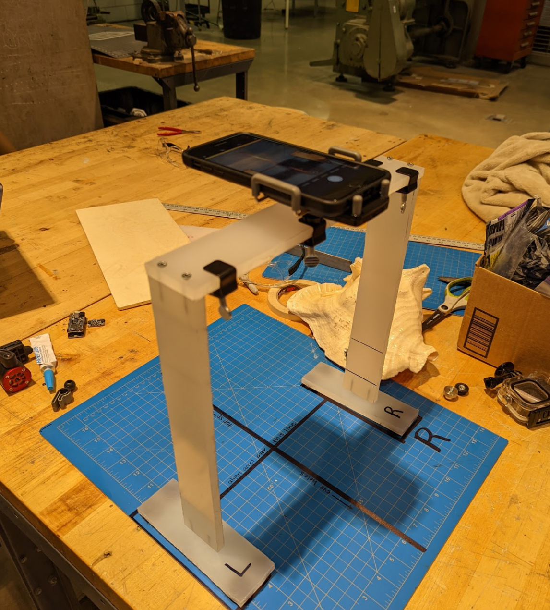
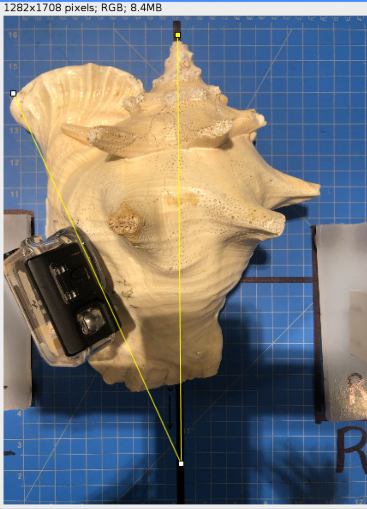
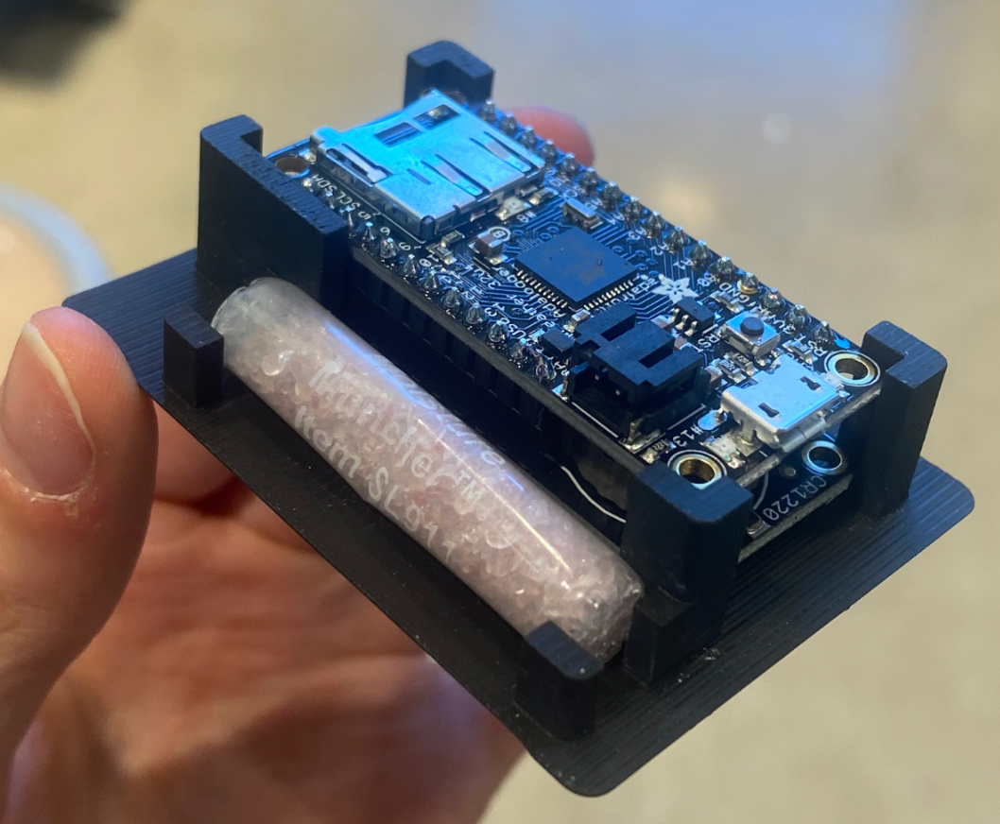

Snail Tracker Project

Our client, Shedd Aquarium researcher Dr. Andy Kough, studies conch movement. My three teammates and I set out to design a snail tracking device that (1) accurately and efficiently translated accelerometer data to directionality, (2) securely attached the device to the conch, (3) prevented internal movement, and (4) increased energy efficiency.
Skills
- project management
- rapid prototyping
- field work
- Arduino
THE PROCESS
Components & Process
MIAMI FIELD WORK
Teammate Bryan Sanchez and I received a grant to perform observation and testing of the full user process in Miami. We began by soldering data loggers and placing them in their Go-Pro housing along with the other components. I joined our client and his partner in freediving to retrieve 16 conchs in Port Everglades. They all look like rocks from the surface, but I managed to pull up three from the seafloor! After placing the conchs in a saltwater mesocosm at Florida International University Biscayne Campus, we attached the trackers and tested data logger functionality. A novel alignment method was tested, and data was recorded in order to correct movement data after the testing period.
The Product
- An improved attachment method that is optimized for efficiency, security, robustness, and ease of use.
- An arduino positioning cradle to secure device components.
- Standardized, off-the-shelf casing components that are waterproof, robust to pressure changes, low weight, easy to use, readily available, and help to easily and consistently identify each unique device.
- A larger capacity battery to maximize data collection time and minimize the number of trips needed to facilitate the study.
 
